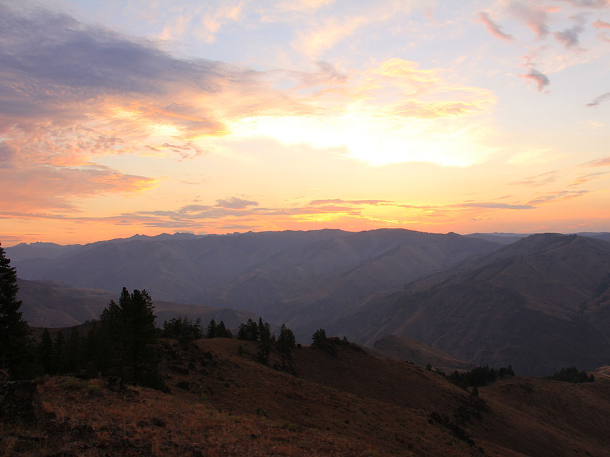
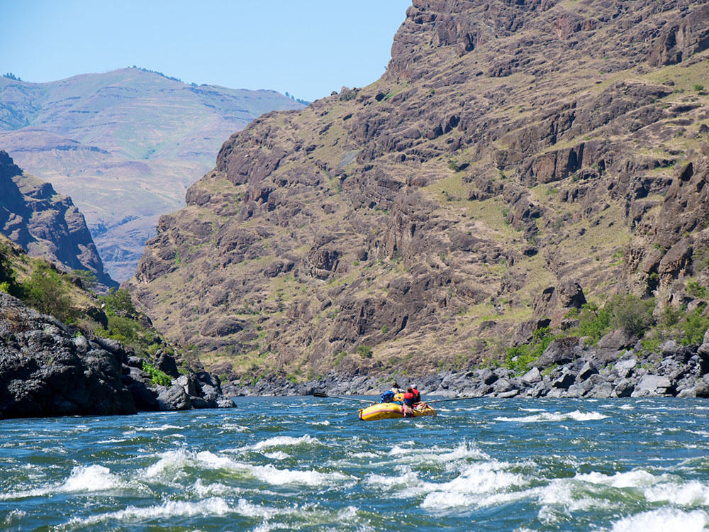
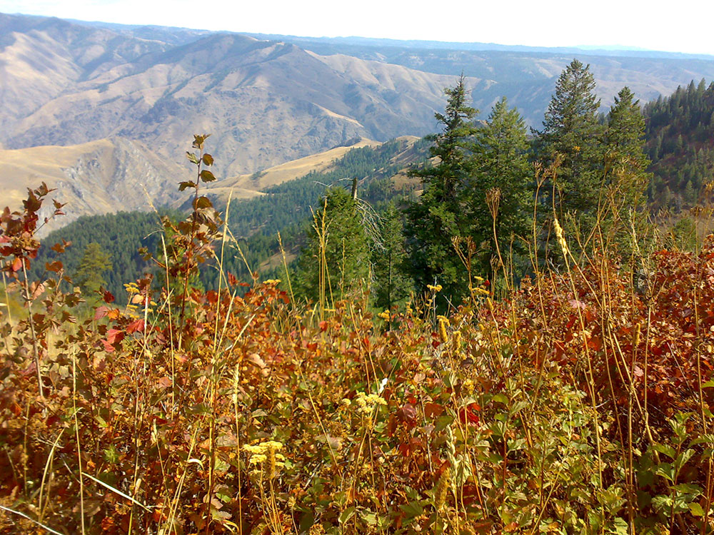
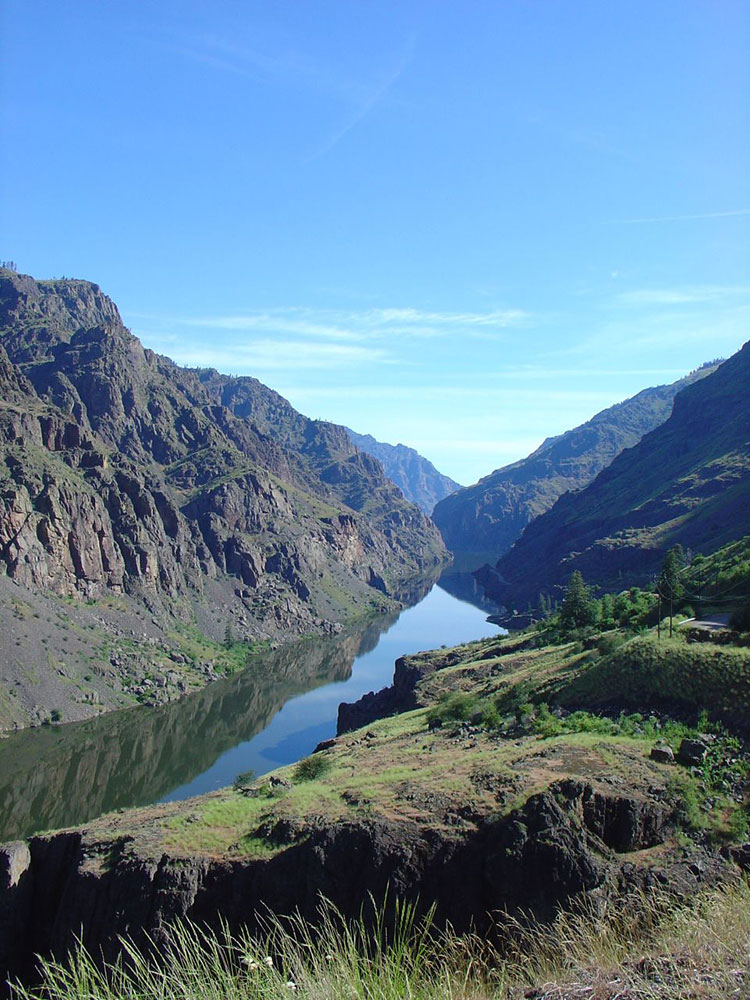
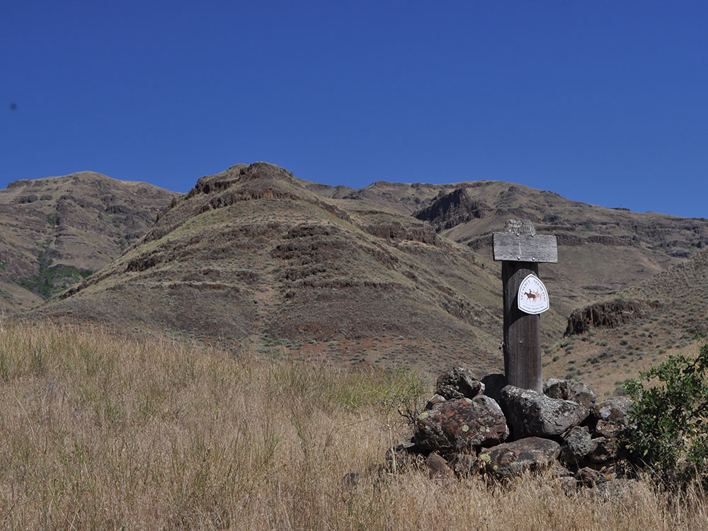
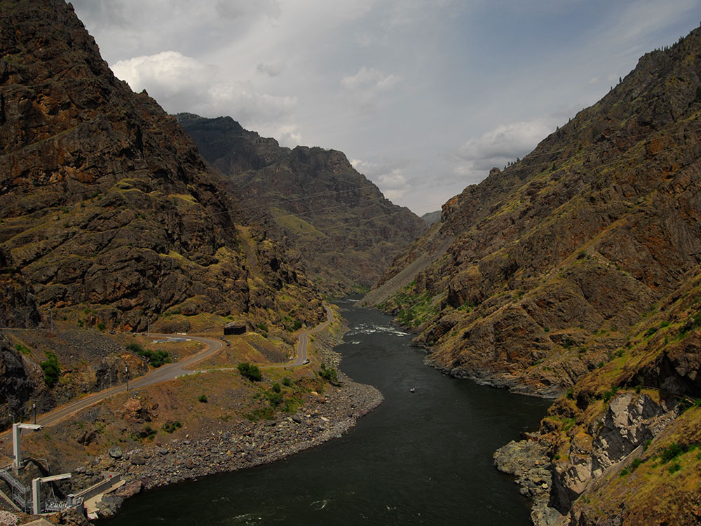

.jpg){kind=link}
National recreation area on the borders of states of Oregon and Idaho protects the historic and archaeological values of the Hells Canyon area and the area of the Snake River between Hells Canyon Dam and the Oregon-Washington border
General Information
Overview
Hells Canyon National Recreation Area protects the deepest river gorge in North America, a rugged stretch of the Snake River that forms the border between Oregon and Idaho. The canyon plunges nearly 8,000 feet from the Seven Devils Mountains in Idaho to the river below, deeper than the Grand Canyon, and the recreation area covers more than 650,000 acres of forests, grasslands and wilderness. Established in 1975 and managed by the Forest Service, it also protects a wild and scenic stretch of the Snake River. People come for jet boat and whitewater trips, fishing, backpacking, scenic drives to remote overlooks and a feeling of true wilderness.
Access
The Oregon side of the recreation area is reached from the small towns of Joseph, Enterprise, Halfway and Imnaha in northeastern Oregon, far from major cities. The most popular overlook, Hat Point, is at the end of a long, steep gravel road from Imnaha, and the Hells Canyon Scenic Byway runs from Baker City through Halfway to Oxbow and the dams on the Snake River. Visitors also access the canyon by jet boat from Lewiston, Idaho, or Hells Canyon Dam. Distances are great, roads are narrow, and gas, cell service and supplies are limited, so plan carefully.
Seasons
Spring and early summer bring wildflowers, high water and comfortable temperatures, while summer inside the canyon can be extremely hot, with temperatures over 100°F. Fall is quieter, with golden color on the rim and good weather for hiking and fishing. Snow closes the high roads, including the Hat Point road, from late fall to late spring, and some facilities operate only in the warm season. The canyon bottom stays milder in winter than the rim, but access is limited and services are few.
Things to Do
Look Into North America's Deepest Canyon
Hells Canyon National Recreation Area offers viewpoints where visitors can look down thousands of feet to the Snake River. The scale of the canyon and the layered ridges make it a rewarding trip for scenery lovers.
Drive to Hat Point
Hat Point is a rim lookout with panoramic views of the Seven Devils and the Snake River. The road is long and steep and needs a high-clearance vehicle, but the view is among the best in the Northwest.
Take a Jet Boat or Raft Trip
Guided jet boat tours and whitewater trips travel the Snake River through the canyon, passing rapids, ancient rock art and wildlife. They are the easiest way to see the canyon floor.
Fish the Snake River
The river is known for smallmouth bass, sturgeon, steelhead and trout. Anglers can fish from the bank, from boats or on guided trips.
Backpack the Wilderness Trails
The Snake River Trail and trails in the Hells Canyon Wilderness lead deep into the canyon. They are best for experienced hikers in spring or fall.
Top Trails
Hat Point Lookout Path
Length: Approximately 0.5 miles round trip
Elevation Gain: Minimal
Difficulty: Easy
From the end of the Hat Point road, a short path leads to the lookout tower and rim viewpoints. It is easy, but the views are sweeping and the drop is steep.
Snake River National Recreation Trail
Length: Approximately 30 miles one way (sections can be hiked)
Elevation Gain: Moderate
Difficulty: Moderate to Strenuous
This long trail follows the Snake River on the Oregon side of the canyon, passing historic sites and scenic stretches. Hikers can do short segments or a multi-day trek, and summer heat is intense.
Imnaha River Trail
Length: Varies; sections of several miles
Elevation Gain: Moderate
Difficulty: Moderate
Trails along the Imnaha River and tributaries provide access to river canyons and forests. They are quieter than the Snake River routes and good for day hikes in spring and fall.
Visitor Centers
The Hells Canyon National Recreation Area is served by Forest Service offices and visitor centers in the Wallowa-Whitman National Forest, including the Wallowa Mountains Visitor Center near Enterprise and the Hells Canyon Visitor Center near Hells Canyon Dam. They have maps, exhibits, permits and rangers who provide current road and trail conditions. Hours are seasonal, so check the Forest Service website before traveling.
Camping and Lodging
Campgrounds in and near the recreation area include Hat Point Campground on the rim, as well as Idaho Power parks at Copperfield and Hells Canyon Park, and backcountry camping with permits. Lodging is available in Joseph and Enterprise, about 1.5 to 2 hours from Hat Point, where inns, lodges and cabins such as the Wallowa Lake Lodge serve visitors. Halfway, Oxbow and Baker City offer more options on the south side, including the historic Geiser Grand Hotel, and Lewiston, Idaho has chain hotels. Check each property's website for current availability.
This article uses material from the Wikipedia article and official pages for Hells Canyon National Recreation Area, U.S. Forest Service: Hells Canyon National Recreation Area, released under the Creative Commons Attribution-Share-Alike License 3.0.

.jpg){kind=link}




